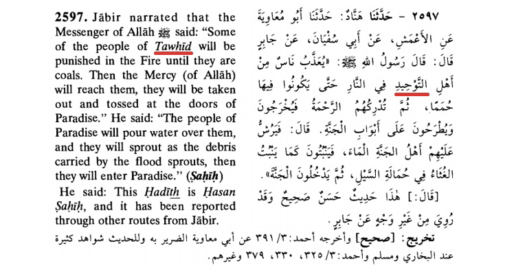
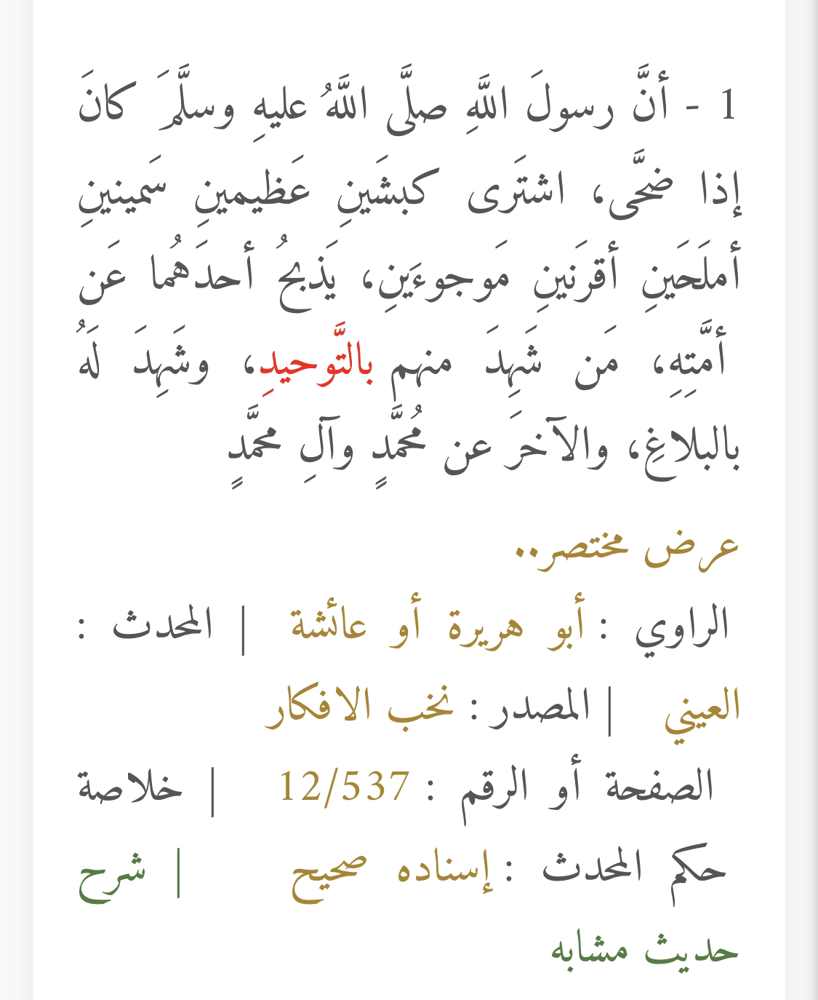
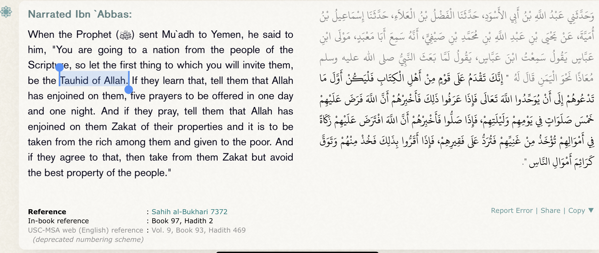
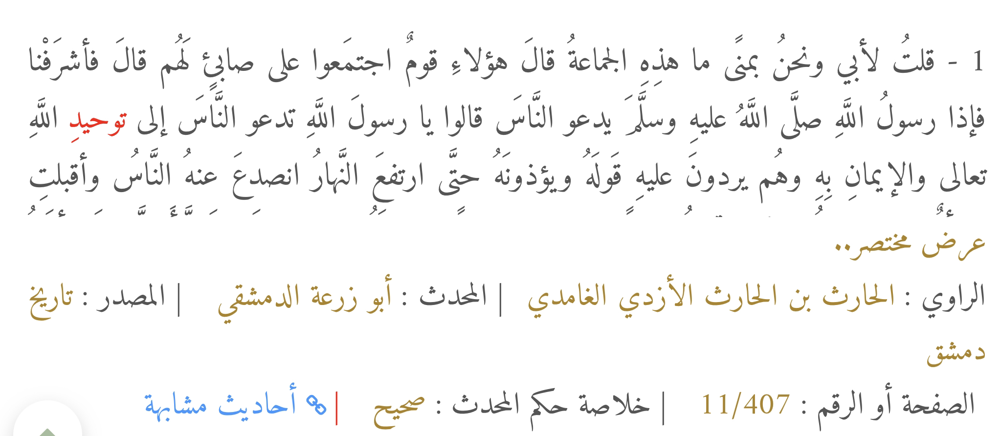
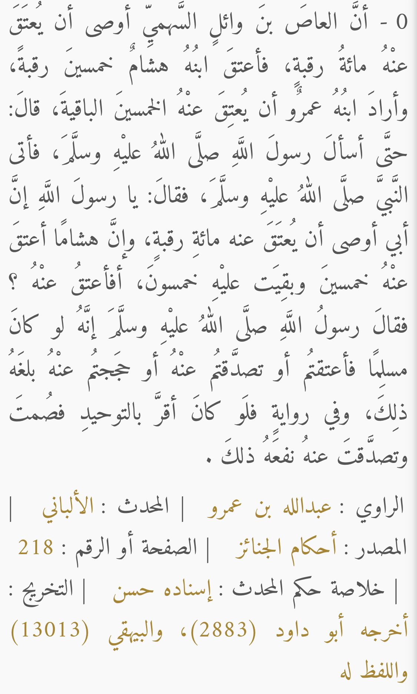
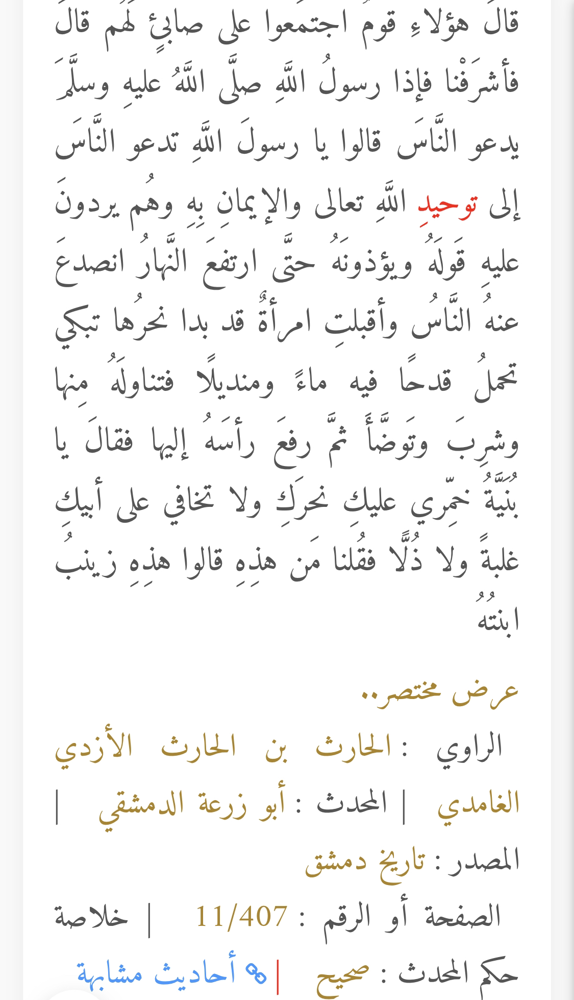
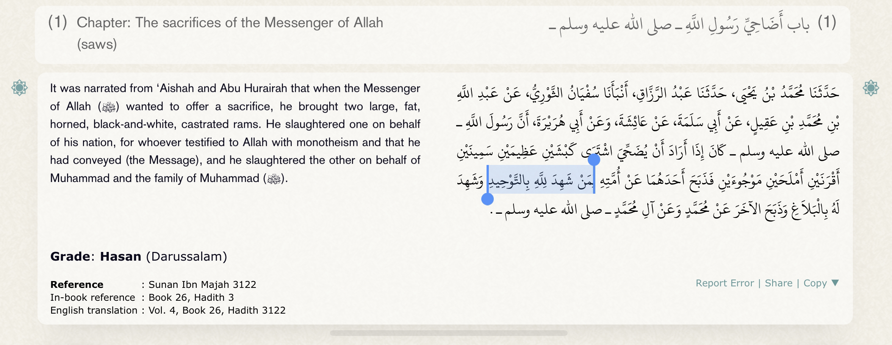
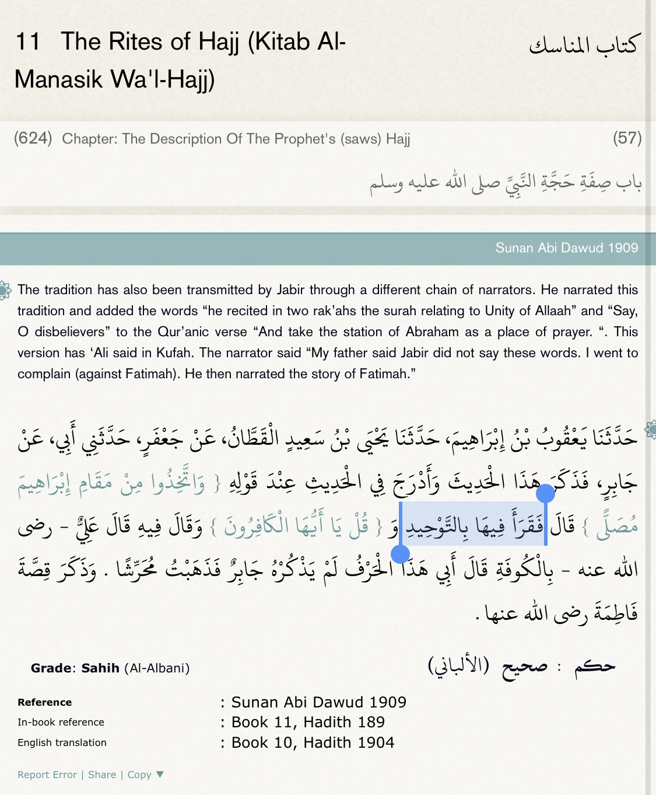

In response to our claim that nowhere in the Bible does the trinity ever get mentioned, Christians try to turn the tables on us and claim that tawhid is also not mentioned in the Quran or Hadith. So we will be refuting them here:
Surah Al-Ikhlaas (Sincerity)
112:1
Say, ‘He is God the One,
Translation: Abdul Haleem | Meccan
Surah Aal-i-Imraan (The Family of Imraan)
3:2
God: there is no god but Him, the Ever Living, the Ever Watchful.
Translation: Abdul Haleem | Medinan
It does not change anything that tawhid is not mentioned by name in the Quran because the doctrine itself is explained very explicitly throughout the Quran. However Christians are not able to show you verses in the Bible that teaches the trinity and how it functions.
But since this claim also includes ahadith. We will be proving proof that tawhid is mentioned in ahadith by name:
Jabir narrated that the Messenger of Allah said: ‘Some of the people of TAWHID will be punished in the Fire until they are coals. Then the Mercy (of Allah) will reach them, they will be taken out and tossed at the doors of Paradise will pour water over them, and they will sprout as the debris carried by the flood sprouts, then they will enter Paradise.’”

Aas ibn Wael made a vow in pre-Islamic era of ignorance to sacrifice 100 camels and Hisham ibn al-Aas to sacrifice 50 camels; Umar asked the Prophet about it and he said: But if your father had affirmed TAWHEED, then fasted and admitted it, that would have been of benefit to him.

When the Prophet (ﷺ) sent Mu`adh to Yemen, he said to him, "You are going to a nation from the people of the Scripture, so let the first thing to which you will invite them, be the Tauhid of Allah. If they learn that, tell them that Allah has enjoined on them, five prayers to be offered in one day and one night. And if they pray, tell them that Allah has enjoined on them Zakat of their properties and it is to be taken from the rich among them and given to the poor. And if they agree to that, then take from them Zakat but avoid the best property of the people."

“Some people of the people of monotheism (Ahl-at-Tauheed) will be punished, being placed in the hellfire until they are like burnt coal, then they will have the mercy reach them, then they will be taken out and placed at the doors of Paradise. The people of Paradise will (come and) spray upon them some water and they will sprout up like the seeds of sprouts after the rushing water of the rainfall, then they will enter Paradise.”

“Amr bin Shu’aib narrated from his father, who narrated from his grandfather that al-Aas bin Wa’il took an oath during the pre-Islamic times (Jahiliyyah) that he would slaughter one hundred goats and that Hisham bin al-‘Aas slaughtered his share of 50 goats. Then ‘Amr bin al-`Aas asked the Prophet (P) about that, and he said, “As for your father, if he affirmed TAWHID and you fast and give charity on his behalf, it would benefit him.”

“The Prophet (ﷺ) said, “There was a man who came before you who did no good whatsoever, except TAWHID. When his time to die came, he said to his family, ‘Look, if I die have my body burnt to coal, then make them into ashes and wait for a windy day and throw half of the ashes in the desert, and half in the ocean. By Allah, if Allah decides to punish my body, He will punish it like none other in the universe.’ When he died they did as he requested to his body, and Allah ordered the desert to gather whatever it had of him in it and the ocean likewise, until he stood in Allah’s Grasp. Allah U said, ‘O son of Adam, what caused you to do what you did?’ He said, ‘O Lord, I did so out of fear of you’ – and in another narration, ‘out of awe in you, and you know best–.’ The Prophet said, ‘Allah forgave him because of it, and he did no good actions, besides TAWHID.’”
https://al-maktaba.org/book/33842/517
Al-Harith bin al-Harith al-Ghamidi said, “I said to my father, ‘What is that group?’ He said, ‘Those are a people following a Sabian among them.’ So, we continued on and found Allah’s Messenger (ﷺ) calling the people to the Tawhid of Allah, and to have faith in Him. All the while, they were rebuking and hurting him until it became midday and then people left from around him. A woman, who’s neck was uncovered, appeared carrying a cup of water and a handkerchief; the Prophet drank from it and made ablution, then raised his head saying, “O girl, cover your upper portion of the chest and do not fear for your father.’ We said, ‘Who is that?’ They said, ‘This is his daughter, Zaynab.’

It was narrated from ‘Aishah and Abu Hurairah that when the Messenger of Allah (ﷺ) wanted to offer a sacrifice, he brought two large, fat, horned, black-and-white, castrated rams. He slaughtered one on behalf of his nation, for whoever testified to Allah with monotheism and that he had conveyed (the Message), and he slaughtered the other on behalf of Muhammad and the family of Muhammad (ﷺ).

Jabir bin ‘Abdillah (r.a) said, “Allah’s Messenger (ﷺ) said, ‘People of Tawhid will be punished in Hellfire, until they turn into coal, then mercy will descend on them and they will exit, and will be placed by the doors of Paradise. The people of Paradise will pour water on them, and they will grow like the tree branches, leaves, and seeds that grow in the aftermath of floods; then they will enter Paradise.”
https://al-maktaba.org/book/10757/1281
Although the English did not add the Arabic part: Abdullah (RA) said the verse " Qul yaa ayyuhal Kaafiroon" was the verse of tawheed
